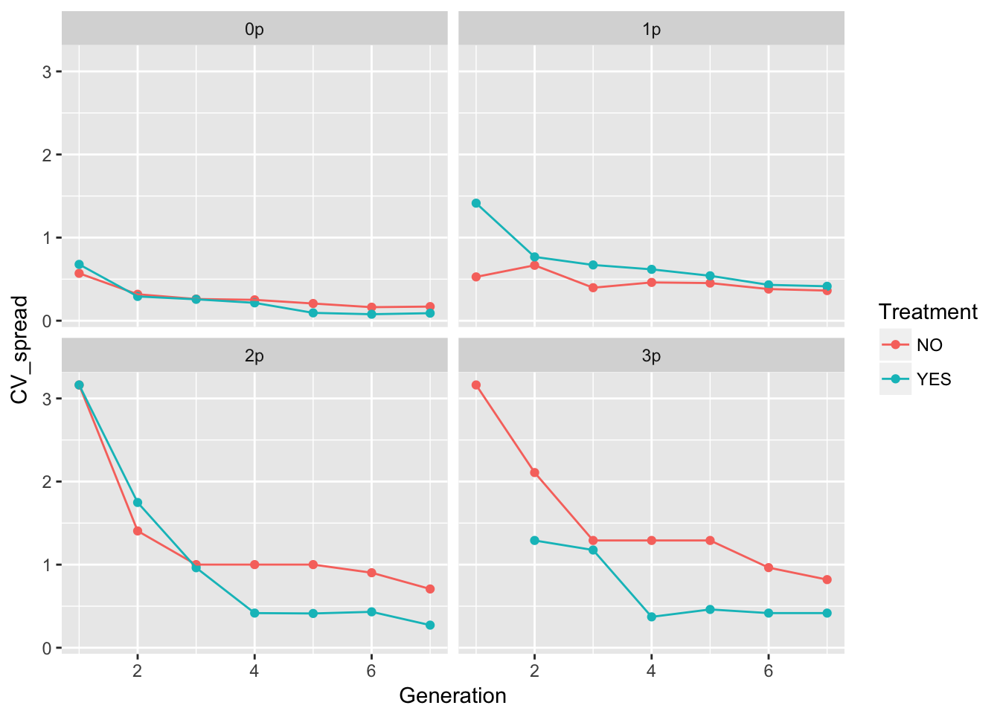
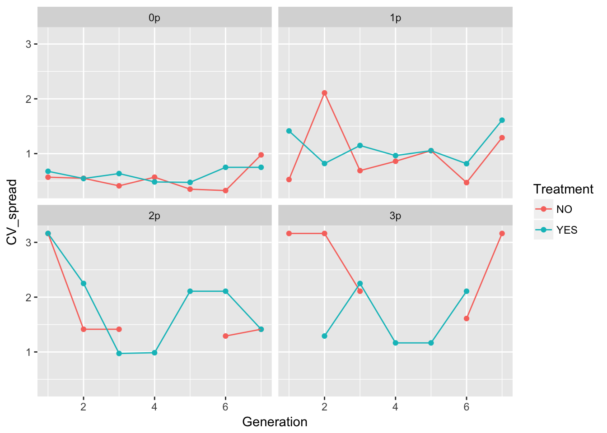

12 10 May 2027
12.1 Spread patterns in evolution experiments
We’ll repeat the analysis with the newly loaded RIL data. Let’s calculate the means and variances of cumulative spread:
cum_spread_stats <- group_by(RIL_spread, Treatment, Gap, Gen, Generation) %>%
summarise(mean_spread = mean(Furthest),
var_spread = var(Furthest),
CV_spread = sqrt(var_spread)/mean_spread
)And now plot the results:
ggplot(aes(x = Generation, y = mean_spread, color = Treatment), data = cum_spread_stats) +
geom_point() + geom_line() + facet_wrap(~ Gap)ggplot(aes(x = Generation, y = var_spread, color = Treatment), data = cum_spread_stats) +
geom_point() + geom_line() + facet_wrap(~ Gap)
ggplot(aes(x = Generation, y = CV_spread, color = Treatment), data = cum_spread_stats) +
geom_point() + geom_line() + facet_wrap(~ Gap)Warning: Removed 1 rows containing missing values (geom_point).
The patterns in the mean are probably not overly distinguishable from linear, although I’d want to see CIs.
Let’s look at per-generation spread.
speed_stats <- group_by(RIL_spread, Treatment, Gap, Gen, Generation) %>%
summarise(mean_spread = mean(speed),
var_spread = var(speed),
CV_spread = sqrt(var_spread)/mean_spread
)And now plot the results:
ggplot(aes(x = Generation, y = mean_spread, color = Treatment), data = speed_stats) +
geom_point() + geom_line() + facet_wrap(~ Gap)
ggplot(aes(x = Generation, y = var_spread, color = Treatment), data = speed_stats) +
geom_point() + geom_line() + facet_wrap(~ Gap)ggplot(aes(x = Generation, y = CV_spread, color = Treatment), data = speed_stats) +
geom_point() + geom_line() + facet_wrap(~ Gap)Warning: Removed 6 rows containing missing values (geom_point).Warning: Removed 1 rows containing missing values (geom_path).
In 0p and 1p, the treatments look very similar. But I bet there will be differences in the autocorrelation structure. Let’s fit some models.
m1_0NO <- lm(speed ~ Gen + Rep + speed_m1, data = filter(RIL_spread, Gap == "0p", Treatment == "NO"))
summary(m1_0NO)
Call:
lm(formula = speed ~ Gen + Rep + speed_m1, data = filter(RIL_spread,
Gap == "0p", Treatment == "NO"))
Residuals:
Min 1Q Median 3Q Max
-2.3398 -0.9501 0.0388 0.7904 3.5296
Coefficients:
Estimate Std. Error t value Pr(>|t|)
(Intercept) 2.3567 0.7471 3.154 0.0029 **
Gen3 -0.2490 0.6206 -0.401 0.6902
Gen4 -0.4796 0.6155 -0.779 0.4401
Gen5 0.1000 0.6146 0.163 0.8715
Gen6 1.0612 0.6232 1.703 0.0957 .
Gen7 -0.2470 0.6669 -0.370 0.7129
Rep2 -0.2007 0.7955 -0.252 0.8020
Rep3 0.2347 0.8017 0.293 0.7711
Rep4 0.6667 0.7934 0.840 0.4053
Rep5 1.4013 0.8017 1.748 0.0874 .
Rep6 -0.4660 0.7955 -0.586 0.5610
Rep7 0.2007 0.7955 0.252 0.8020
Rep8 0.7177 0.7981 0.899 0.3734
Rep9 0.9353 0.8119 1.152 0.2556
Rep10 1.0850 0.8063 1.346 0.1853
speed_m1 -0.1020 0.1726 -0.591 0.5575
---
Signif. codes: 0 '***' 0.001 '**' 0.01 '*' 0.05 '.' 0.1 ' ' 1
Residual standard error: 1.374 on 44 degrees of freedom
(10 observations deleted due to missingness)
Multiple R-squared: 0.2873, Adjusted R-squared: 0.04432
F-statistic: 1.182 on 15 and 44 DF, p-value: 0.3201car::Anova(m1_0NO)Anova Table (Type II tests)
Response: speed
Sum Sq Df F value Pr(>F)
Gen 14.832 5 1.5709 0.1882
Rep 18.390 9 1.0820 0.3949
speed_m1 0.660 1 0.3493 0.5575
Residuals 83.090 44 m1_0YES <- lm(speed ~ Gen + Rep + speed_m1, data = filter(RIL_spread, Gap == "0p", Treatment == "YES"))
summary(m1_0YES)
Call:
lm(formula = speed ~ Gen + Rep + speed_m1, data = filter(RIL_spread,
Gap == "0p", Treatment == "YES"))
Residuals:
Min 1Q Median 3Q Max
-4.4242 -0.9333 -0.0096 0.7844 9.4123
Coefficients:
Estimate Std. Error t value Pr(>|t|)
(Intercept) 3.1877 1.2650 2.520 0.0154 *
Gen3 0.8602 1.0866 0.792 0.4328
Gen4 0.3393 1.0909 0.311 0.7572
Gen5 3.4000 1.0862 3.130 0.0031 **
Gen6 0.4369 1.1807 0.370 0.7131
Gen7 -0.5796 1.0877 -0.533 0.5968
Rep2 -1.2330 1.4031 -0.879 0.3843
Rep3 -0.7330 1.4031 -0.522 0.6040
Rep4 -0.9329 1.4041 -0.664 0.5099
Rep5 -0.6667 1.4023 -0.475 0.6368
Rep6 -0.1667 1.4023 -0.119 0.9059
Rep7 -0.5663 1.4031 -0.404 0.6884
Rep8 -1.1998 1.4025 -0.856 0.3969
Rep9 -0.4668 1.4025 -0.333 0.7408
Rep10 -0.3333 1.4023 -0.238 0.8132
speed_m1 -0.1990 0.1446 -1.376 0.1757
---
Signif. codes: 0 '***' 0.001 '**' 0.01 '*' 0.05 '.' 0.1 ' ' 1
Residual standard error: 2.429 on 44 degrees of freedom
(10 observations deleted due to missingness)
Multiple R-squared: 0.32, Adjusted R-squared: 0.08825
F-statistic: 1.381 on 15 and 44 DF, p-value: 0.1992car::Anova(m1_0YES)Anova Table (Type II tests)
Response: speed
Sum Sq Df F value Pr(>F)
Gen 96.161 5 3.2602 0.01369 *
Rep 9.104 9 0.1715 0.99602
speed_m1 11.173 1 1.8940 0.17572
Residuals 259.560 44
---
Signif. codes: 0 '***' 0.001 '**' 0.01 '*' 0.05 '.' 0.1 ' ' 1Nothing here, really, except for a generation effect in the evolution treatment, which is in turn driven by the high mean in generation 5. We don’t have enough df to look at an interaction, let’s look at the distribution of values to see if it’s a single outlier:
filter(RIL_spread, Treatment == "YES", Gap == "0p", Generation == 5)$speed [1] 16 3 7 6 5 7 1 4 3 3It’s rep 1 with a crazy jump. Could that be a data error? Let’s look at the time series:
filter(RIL_spread, Treatment == "YES", Gap == "0p", Rep == "1")$speed[1] 2 -1 0 0 16 1 4popRIL %>% filter(Treatment == "YES", Gap == "0p", Rep == "1") %>%
select(Generation, Pot, Seedlings) %>%
reshape(timevar = "Generation", direction = "wide", idvar = "Pot") Pot Seedlings.1 Seedlings.2 Seedlings.3 Seedlings.4 Seedlings.5
1 0 262 503 602 785 506
2 1 47 330 484 454 172
3 2 5 NA NA NA 298
13 3 NA NA NA NA 236
14 4 NA NA NA NA 176
15 5 NA NA NA NA 519
16 6 NA NA NA NA 235
17 7 NA NA NA NA 340
18 8 NA NA NA NA 322
19 9 NA NA NA NA 346
20 10 NA NA NA NA 346
21 11 NA NA NA NA 340
22 12 NA NA NA NA 345
23 13 NA NA NA NA 208
24 14 NA NA NA NA 117
25 15 NA NA NA NA 1
26 17 NA NA NA NA 1
43 16 NA NA NA NA NA
45 18 NA NA NA NA NA
65 19 NA NA NA NA NA
66 20 NA NA NA NA NA
67 22 NA NA NA NA NA
Seedlings.6 Seedlings.7
1 880 271
2 601 166
3 845 249
13 992 332
14 628 225
15 788 388
16 526 571
17 778 285
18 630 563
19 490 384
20 733 268
21 632 312
22 602 368
23 281 133
24 826 194
25 152 266
26 96 355
43 644 136
45 4 251
65 NA 89
66 NA 15
67 NA 1There is clearly missing data in generations 2-4! This also appears to have been fixed in the Science paper, as there is no replicate sitting at pot 2 for several generations.
I’ve emailed Jenn, but for now let’s look at it without Rep1
Let’s calculate the means and variances of cumulative spread:
cum_spread_stats <- filter(RIL_spread, !(Rep == "1" & Treatment == "YES" & Gap == "0p")) %>%
group_by(Treatment, Gap, Gen, Generation) %>%
summarise(mean_spread = mean(Furthest),
var_spread = var(Furthest),
CV_spread = sqrt(var_spread)/mean_spread
)And now plot the results:
ggplot(aes(x = Generation, y = mean_spread, color = Treatment), data = cum_spread_stats) +
geom_point() + geom_line() + facet_wrap(~ Gap)ggplot(aes(x = Generation, y = var_spread, color = Treatment), data = cum_spread_stats) +
geom_point() + geom_line() + facet_wrap(~ Gap)
ggplot(aes(x = Generation, y = CV_spread, color = Treatment), data = cum_spread_stats) +
geom_point() + geom_line() + facet_wrap(~ Gap)Warning: Removed 1 rows containing missing values (geom_point).
The patterns in the mean are probably not overly distinguishable from linear, although I’d want to see CIs.
Let’s look at per-generation spread.
speed_stats <- filter(RIL_spread, !(Rep == "1" & Treatment == "YES" & Gap == "0p")) %>%
group_by(Treatment, Gap, Gen, Generation) %>%
summarise(mean_spread = mean(speed),
var_spread = var(speed),
CV_spread = sqrt(var_spread)/mean_spread
)And now plot the results:
ggplot(aes(x = Generation, y = mean_spread, color = Treatment), data = speed_stats) +
geom_point() + geom_line() + facet_wrap(~ Gap)
ggplot(aes(x = Generation, y = var_spread, color = Treatment), data = speed_stats) +
geom_point() + geom_line() + facet_wrap(~ Gap)
ggplot(aes(x = Generation, y = CV_spread, color = Treatment), data = speed_stats) +
geom_point() + geom_line() + facet_wrap(~ Gap)Warning: Removed 6 rows containing missing values (geom_point).Warning: Removed 1 rows containing missing values (geom_path).
In 0p and 1p, the treatments look very similar. But I bet there will be differences in the autocorrelation structure. Let’s fit some models.
m1_0NO <- lm(speed ~ Gen + Rep + speed_m1,
data = filter(RIL_spread, Gap == "0p", Treatment == "NO"))
summary(m1_0NO)
Call:
lm(formula = speed ~ Gen + Rep + speed_m1, data = filter(RIL_spread,
Gap == "0p", Treatment == "NO"))
Residuals:
Min 1Q Median 3Q Max
-2.3398 -0.9501 0.0388 0.7904 3.5296
Coefficients:
Estimate Std. Error t value Pr(>|t|)
(Intercept) 2.3567 0.7471 3.154 0.0029 **
Gen3 -0.2490 0.6206 -0.401 0.6902
Gen4 -0.4796 0.6155 -0.779 0.4401
Gen5 0.1000 0.6146 0.163 0.8715
Gen6 1.0612 0.6232 1.703 0.0957 .
Gen7 -0.2470 0.6669 -0.370 0.7129
Rep2 -0.2007 0.7955 -0.252 0.8020
Rep3 0.2347 0.8017 0.293 0.7711
Rep4 0.6667 0.7934 0.840 0.4053
Rep5 1.4013 0.8017 1.748 0.0874 .
Rep6 -0.4660 0.7955 -0.586 0.5610
Rep7 0.2007 0.7955 0.252 0.8020
Rep8 0.7177 0.7981 0.899 0.3734
Rep9 0.9353 0.8119 1.152 0.2556
Rep10 1.0850 0.8063 1.346 0.1853
speed_m1 -0.1020 0.1726 -0.591 0.5575
---
Signif. codes: 0 '***' 0.001 '**' 0.01 '*' 0.05 '.' 0.1 ' ' 1
Residual standard error: 1.374 on 44 degrees of freedom
(10 observations deleted due to missingness)
Multiple R-squared: 0.2873, Adjusted R-squared: 0.04432
F-statistic: 1.182 on 15 and 44 DF, p-value: 0.3201car::Anova(m1_0NO)Anova Table (Type II tests)
Response: speed
Sum Sq Df F value Pr(>F)
Gen 14.832 5 1.5709 0.1882
Rep 18.390 9 1.0820 0.3949
speed_m1 0.660 1 0.3493 0.5575
Residuals 83.090 44 m1_0YES <- lm(speed ~ Gen + Rep + speed_m1,
data = filter(RIL_spread, Gap == "0p", Treatment == "YES", Rep != "1"))
summary(m1_0YES)
Call:
lm(formula = speed ~ Gen + Rep + speed_m1, data = filter(RIL_spread,
Gap == "0p", Treatment == "YES", Rep != "1"))
Residuals:
Min 1Q Median 3Q Max
-3.3389 -0.9048 -0.2336 0.9944 3.2949
Coefficients:
Estimate Std. Error t value Pr(>|t|)
(Intercept) 2.51572 0.90182 2.790 0.00812 **
Gen3 0.91819 0.78315 1.172 0.24814
Gen4 0.37478 0.79621 0.471 0.64048
Gen5 1.94748 0.78364 2.485 0.01735 *
Gen6 0.08289 0.83462 0.099 0.92140
Gen7 -1.19900 0.78447 -1.528 0.13448
Rep3 0.50000 0.95896 0.521 0.60504
Rep4 0.28939 0.95926 0.302 0.76450
Rep5 0.58789 0.96017 0.612 0.54391
Rep6 1.08789 0.96017 1.133 0.26412
Rep7 0.66667 0.95896 0.695 0.49105
Rep8 0.04394 0.95926 0.046 0.96369
Rep9 0.79850 0.96168 0.830 0.41141
Rep10 0.92122 0.96017 0.959 0.34325
speed_m1 -0.26367 0.14451 -1.825 0.07573 .
---
Signif. codes: 0 '***' 0.001 '**' 0.01 '*' 0.05 '.' 0.1 ' ' 1
Residual standard error: 1.661 on 39 degrees of freedom
(9 observations deleted due to missingness)
Multiple R-squared: 0.3745, Adjusted R-squared: 0.1499
F-statistic: 1.668 on 14 and 39 DF, p-value: 0.1038car::Anova(m1_0YES)Anova Table (Type II tests)
Response: speed
Sum Sq Df F value Pr(>F)
Gen 49.133 5 3.5619 0.009509 **
Rep 6.751 8 0.3059 0.959291
speed_m1 9.184 1 3.3291 0.075731 .
Residuals 107.593 39
---
Signif. codes: 0 '***' 0.001 '**' 0.01 '*' 0.05 '.' 0.1 ' ' 1There’s still an effect of Gen 5, but now it looks like just the peak of a quadratic pattern:
m2_0NO <- lm(speed ~ poly(Generation, 2) + Rep + speed_m1,
data = filter(RIL_spread, Gap == "0p", Treatment == "NO"))
summary(m2_0NO)
Call:
lm(formula = speed ~ poly(Generation, 2) + Rep + speed_m1, data = filter(RIL_spread,
Gap == "0p", Treatment == "NO"))
Residuals:
Min 1Q Median 3Q Max
-2.8175 -0.9077 -0.0137 0.7040 3.0469
Coefficients:
Estimate Std. Error t value Pr(>|t|)
(Intercept) 2.4458 0.7068 3.460 0.00116 **
poly(Generation, 2)1 1.8290 2.2192 0.824 0.41402
poly(Generation, 2)2 -0.1183 2.2043 -0.054 0.95744
Rep2 -0.2185 0.8279 -0.264 0.79295
Rep3 0.2704 0.8340 0.324 0.74719
Rep4 0.6667 0.8258 0.807 0.42359
Rep5 1.4371 0.8340 1.723 0.09143 .
Rep6 -0.4481 0.8279 -0.541 0.59087
Rep7 0.2185 0.8279 0.264 0.79295
Rep8 0.7445 0.8304 0.896 0.37456
Rep9 0.9890 0.8440 1.172 0.24723
Rep10 1.1297 0.8385 1.347 0.18437
speed_m1 -0.1556 0.1743 -0.893 0.37649
---
Signif. codes: 0 '***' 0.001 '**' 0.01 '*' 0.05 '.' 0.1 ' ' 1
Residual standard error: 1.43 on 47 degrees of freedom
(10 observations deleted due to missingness)
Multiple R-squared: 0.1751, Adjusted R-squared: -0.03547
F-statistic: 0.8316 on 12 and 47 DF, p-value: 0.6182car::Anova(m2_0NO)Anova Table (Type II tests)
Response: speed
Sum Sq Df F value Pr(>F)
poly(Generation, 2) 1.757 2 0.4294 0.6534
Rep 19.278 9 1.0469 0.4185
speed_m1 1.631 1 0.7972 0.3765
Residuals 96.165 47 m2_0YES <- lm(speed ~ poly(Generation, 2) + Rep + speed_m1,
data = filter(RIL_spread, Gap == "0p", Treatment == "YES", Rep != "1"))
summary(m2_0YES)
Call:
lm(formula = speed ~ poly(Generation, 2) + Rep + speed_m1, data = filter(RIL_spread,
Gap == "0p", Treatment == "YES", Rep != "1"))
Residuals:
Min 1Q Median 3Q Max
-2.7428 -0.9827 -0.2568 0.8754 3.4194
Coefficients:
Estimate Std. Error t value Pr(>|t|)
(Intercept) 2.71330 0.78203 3.470 0.00122 **
poly(Generation, 2)1 1.68876 2.66425 0.634 0.52961
poly(Generation, 2)2 -8.22899 2.61909 -3.142 0.00307 **
Rep3 0.50000 0.98302 0.509 0.61367
Rep4 0.28026 0.98328 0.285 0.77703
Rep5 0.60615 0.98407 0.616 0.54124
Rep6 1.10615 0.98407 1.124 0.26737
Rep7 0.66667 0.98302 0.678 0.50137
Rep8 0.05308 0.98328 0.054 0.95721
Rep9 0.82590 0.98538 0.838 0.40669
Rep10 0.93949 0.98407 0.955 0.34519
speed_m1 -0.31846 0.13641 -2.335 0.02442 *
---
Signif. codes: 0 '***' 0.001 '**' 0.01 '*' 0.05 '.' 0.1 ' ' 1
Residual standard error: 1.703 on 42 degrees of freedom
(9 observations deleted due to missingness)
Multiple R-squared: 0.2921, Adjusted R-squared: 0.1067
F-statistic: 1.576 on 11 and 42 DF, p-value: 0.1417car::Anova(m2_0YES)Anova Table (Type II tests)
Response: speed
Sum Sq Df F value Pr(>F)
poly(Generation, 2) 34.970 2 6.0315 0.004981 **
Rep 7.029 8 0.3031 0.960710
speed_m1 15.799 1 5.4499 0.024425 *
Residuals 121.756 42
---
Signif. codes: 0 '***' 0.001 '**' 0.01 '*' 0.05 '.' 0.1 ' ' 1In the evolution treatment, strong quadratic effect of generation and negative autocorrelation. Nothing in the no evolution treatment!
Let’s look at the rest of the landscapes.
m2_0NO <- lm(speed ~ poly(Generation, 2) + Rep + speed_m1,
data = filter(RIL_spread, Gap == "1p", Treatment == "NO"))
summary(m2_0NO)
Call:
lm(formula = speed ~ poly(Generation, 2) + Rep + speed_m1, data = filter(RIL_spread,
Gap == "1p", Treatment == "NO"))
Residuals:
Min 1Q Median 3Q Max
-2.6149 -0.7524 0.1080 0.6191 3.1936
Coefficients:
Estimate Std. Error t value Pr(>|t|)
(Intercept) 1.3527 0.5187 2.608 0.01218 *
poly(Generation, 2)1 5.7573 1.8493 3.113 0.00315 **
poly(Generation, 2)2 -4.4217 1.8359 -2.408 0.02000 *
Rep2 0.2124 0.6976 0.304 0.76215
Rep3 0.9852 0.7056 1.396 0.16919
Rep4 -0.2271 0.6928 -0.328 0.74447
Rep5 -0.2271 0.6928 -0.328 0.74447
Rep6 -0.3333 0.6912 -0.482 0.63186
Rep7 0.6519 0.7056 0.924 0.36027
Rep8 0.6519 0.7056 0.924 0.36027
Rep9 0.5457 0.6976 0.782 0.43801
Rep10 -1.2124 0.6976 -1.738 0.08879 .
speed_m1 -0.3186 0.1419 -2.246 0.02947 *
---
Signif. codes: 0 '***' 0.001 '**' 0.01 '*' 0.05 '.' 0.1 ' ' 1
Residual standard error: 1.197 on 47 degrees of freedom
(10 observations deleted due to missingness)
Multiple R-squared: 0.3434, Adjusted R-squared: 0.1758
F-statistic: 2.049 on 12 and 47 DF, p-value: 0.04033car::Anova(m2_0NO)Anova Table (Type II tests)
Response: speed
Sum Sq Df F value Pr(>F)
poly(Generation, 2) 15.094 2 5.2656 0.008641 **
Rep 18.723 9 1.4514 0.194196
speed_m1 7.228 1 5.0431 0.029466 *
Residuals 67.363 47
---
Signif. codes: 0 '***' 0.001 '**' 0.01 '*' 0.05 '.' 0.1 ' ' 1m2_0YES <- lm(speed ~ poly(Generation, 2) + Rep + speed_m1,
data = filter(RIL_spread, Gap == "1p", Treatment == "YES", Rep != "1"))
summary(m2_0YES)
Call:
lm(formula = speed ~ poly(Generation, 2) + Rep + speed_m1, data = filter(RIL_spread,
Gap == "1p", Treatment == "YES", Rep != "1"))
Residuals:
Min 1Q Median 3Q Max
-2.4322 -0.8911 -0.2425 0.8770 3.2000
Coefficients:
Estimate Std. Error t value Pr(>|t|)
(Intercept) 2.391e+00 6.566e-01 3.642 0.000737 ***
poly(Generation, 2)1 -2.207e+00 2.251e+00 -0.980 0.332469
poly(Generation, 2)2 -4.364e-01 2.199e+00 -0.198 0.843638
Rep3 -8.006e-01 8.521e-01 -0.940 0.352776
Rep4 -1.134e+00 8.521e-01 -1.331 0.190420
Rep5 -1.467e+00 8.521e-01 -1.722 0.092418 .
Rep6 -1.694e-15 8.464e-01 0.000 1.000000
Rep7 -1.994e-01 8.521e-01 -0.234 0.816132
Rep8 5.343e-01 8.591e-01 0.622 0.537352
Rep9 -7.336e-01 8.478e-01 -0.865 0.391776
Rep10 -1.067e+00 8.478e-01 -1.258 0.215167
speed_m1 -2.009e-01 1.469e-01 -1.368 0.178626
---
Signif. codes: 0 '***' 0.001 '**' 0.01 '*' 0.05 '.' 0.1 ' ' 1
Residual standard error: 1.466 on 42 degrees of freedom
(9 observations deleted due to missingness)
Multiple R-squared: 0.2046, Adjusted R-squared: -0.003779
F-statistic: 0.9819 on 11 and 42 DF, p-value: 0.4775car::Anova(m2_0YES)Anova Table (Type II tests)
Response: speed
Sum Sq Df F value Pr(>F)
poly(Generation, 2) 3.847 2 0.8950 0.4163
Rep 18.402 8 1.0703 0.4019
speed_m1 4.021 1 1.8711 0.1786
Residuals 90.269 42 m2_0NO <- lm(speed ~ poly(Generation, 2) + Rep + speed_m1,
data = filter(RIL_spread, Gap == "2p", Treatment == "NO"))
summary(m2_0NO)
Call:
lm(formula = speed ~ poly(Generation, 2) + Rep + speed_m1, data = filter(RIL_spread,
Gap == "2p", Treatment == "NO"))
Residuals:
Min 1Q Median 3Q Max
-2.5500 -1.0534 -0.1734 0.5902 4.3641
Coefficients:
Estimate Std. Error t value Pr(>|t|)
(Intercept) 9.251e-01 6.895e-01 1.342 0.1861
poly(Generation, 2)1 -4.270e+00 2.527e+00 -1.690 0.0977 .
poly(Generation, 2)2 6.366e+00 2.470e+00 2.577 0.0132 *
Rep2 -6.145e-01 9.541e-01 -0.644 0.5226
Rep3 1.844e+00 9.791e-01 1.883 0.0659 .
Rep4 1.229e+00 9.635e-01 1.276 0.2084
Rep5 -1.145e-01 9.541e-01 -0.120 0.9050
Rep6 7.448e-16 9.509e-01 0.000 1.0000
Rep7 6.145e-01 9.541e-01 0.644 0.5226
Rep8 6.145e-01 9.541e-01 0.644 0.5226
Rep9 1.115e+00 9.541e-01 1.168 0.2486
Rep10 3.855e-01 9.541e-01 0.404 0.6880
speed_m1 -2.290e-01 1.555e-01 -1.473 0.1474
---
Signif. codes: 0 '***' 0.001 '**' 0.01 '*' 0.05 '.' 0.1 ' ' 1
Residual standard error: 1.647 on 47 degrees of freedom
(10 observations deleted due to missingness)
Multiple R-squared: 0.2538, Adjusted R-squared: 0.06328
F-statistic: 1.332 on 12 and 47 DF, p-value: 0.2331car::Anova(m2_0NO)Anova Table (Type II tests)
Response: speed
Sum Sq Df F value Pr(>F)
poly(Generation, 2) 18.231 2 3.3605 0.04324 *
Rep 24.883 9 1.0192 0.43883
speed_m1 5.885 1 2.1694 0.14745
Residuals 127.489 47
---
Signif. codes: 0 '***' 0.001 '**' 0.01 '*' 0.05 '.' 0.1 ' ' 1m2_0YES <- lm(speed ~ poly(Generation, 2) + Rep + speed_m1,
data = filter(RIL_spread, Gap == "2p", Treatment == "YES", Rep != "1"))
summary(m2_0YES)
Call:
lm(formula = speed ~ poly(Generation, 2) + Rep + speed_m1, data = filter(RIL_spread,
Gap == "2p", Treatment == "YES", Rep != "1"))
Residuals:
Min 1Q Median 3Q Max
-2.5667 -1.4896 -0.9113 1.4641 4.6388
Coefficients:
Estimate Std. Error t value Pr(>|t|)
(Intercept) 2.1786 0.9285 2.346 0.0238 *
poly(Generation, 2)1 -1.1631 3.4858 -0.334 0.7403
poly(Generation, 2)2 -3.2860 3.6111 -0.910 0.3680
Rep3 -0.2584 1.2902 -0.200 0.8422
Rep4 -1.1208 1.2815 -0.875 0.3868
Rep5 -0.3792 1.2815 -0.296 0.7687
Rep6 -0.3792 1.2815 -0.296 0.7687
Rep7 -1.1208 1.2815 -0.875 0.3868
Rep8 0.2416 1.2902 0.187 0.8524
Rep9 -1.0000 1.2786 -0.782 0.4385
Rep10 -0.3792 1.2815 -0.296 0.7687
speed_m1 -0.2416 0.1731 -1.396 0.1701
---
Signif. codes: 0 '***' 0.001 '**' 0.01 '*' 0.05 '.' 0.1 ' ' 1
Residual standard error: 2.215 on 42 degrees of freedom
(9 observations deleted due to missingness)
Multiple R-squared: 0.1019, Adjusted R-squared: -0.1334
F-statistic: 0.4331 on 11 and 42 DF, p-value: 0.9321car::Anova(m2_0YES)Anova Table (Type II tests)
Response: speed
Sum Sq Df F value Pr(>F)
poly(Generation, 2) 9.878 2 1.0071 0.3739
Rep 10.909 8 0.2781 0.9696
speed_m1 9.553 1 1.9479 0.1701
Residuals 205.971 42 m2_0NO <- lm(speed ~ poly(Generation, 2) + Rep + speed_m1,
data = filter(RIL_spread, Gap == "3p", Treatment == "NO"))
summary(m2_0NO)
Call:
lm(formula = speed ~ poly(Generation, 2) + Rep + speed_m1, data = filter(RIL_spread,
Gap == "3p", Treatment == "NO"))
Residuals:
Min 1Q Median 3Q Max
-4.4865 -0.7241 -0.0991 0.2443 3.1763
Coefficients:
Estimate Std. Error t value Pr(>|t|)
(Intercept) 1.595e+00 6.701e-01 2.381 0.0214 *
poly(Generation, 2)1 2.321e-01 2.426e+00 0.096 0.9242
poly(Generation, 2)2 2.721e+00 2.405e+00 1.131 0.2636
Rep2 -6.928e-16 9.135e-01 0.000 1.0000
Rep3 -1.524e+00 9.207e-01 -1.655 0.1045
Rep4 -1.524e+00 9.207e-01 -1.655 0.1045
Rep5 -8.573e-01 9.207e-01 -0.931 0.3565
Rep6 -4.760e-01 9.207e-01 -0.517 0.6076
Rep7 -1.524e+00 9.207e-01 -1.655 0.1045
Rep8 -6.667e-01 9.135e-01 -0.730 0.4692
Rep9 -6.667e-01 9.135e-01 -0.730 0.4692
Rep10 -1.333e+00 9.135e-01 -1.460 0.1511
speed_m1 -2.860e-01 1.715e-01 -1.667 0.1021
---
Signif. codes: 0 '***' 0.001 '**' 0.01 '*' 0.05 '.' 0.1 ' ' 1
Residual standard error: 1.582 on 47 degrees of freedom
(10 observations deleted due to missingness)
Multiple R-squared: 0.1767, Adjusted R-squared: -0.03345
F-statistic: 0.8409 on 12 and 47 DF, p-value: 0.6093car::Anova(m2_0NO)Anova Table (Type II tests)
Response: speed
Sum Sq Df F value Pr(>F)
poly(Generation, 2) 5.157 2 1.0299 0.3649
Rep 18.543 9 0.8229 0.5982
speed_m1 6.961 1 2.7805 0.1021
Residuals 117.671 47 m2_0YES <- lm(speed ~ poly(Generation, 2) + Rep + speed_m1,
data = filter(RIL_spread, Gap == "3p", Treatment == "YES", Rep != "1"))
summary(m2_0YES)
Call:
lm(formula = speed ~ poly(Generation, 2) + Rep + speed_m1, data = filter(RIL_spread,
Gap == "3p", Treatment == "YES", Rep != "1"))
Residuals:
Min 1Q Median 3Q Max
-3.3934 -1.1567 -0.0894 0.8961 6.0397
Coefficients:
Estimate Std. Error t value Pr(>|t|)
(Intercept) 1.543e+00 8.663e-01 1.781 0.082173 .
poly(Generation, 2)1 4.948e+00 3.323e+00 1.489 0.143922
poly(Generation, 2)2 -1.057e+01 3.209e+00 -3.293 0.002019 **
Rep3 2.596e-15 1.189e+00 0.000 1.000000
Rep4 1.009e+00 1.193e+00 0.846 0.402187
Rep5 1.009e+00 1.193e+00 0.846 0.402187
Rep6 -1.009e+00 1.193e+00 -0.846 0.402187
Rep7 1.009e+00 1.193e+00 0.846 0.402187
Rep8 1.832e-15 1.189e+00 0.000 1.000000
Rep9 -1.009e+00 1.193e+00 -0.846 0.402187
Rep10 -1.009e+00 1.193e+00 -0.846 0.402187
speed_m1 -5.141e-01 1.322e-01 -3.888 0.000353 ***
---
Signif. codes: 0 '***' 0.001 '**' 0.01 '*' 0.05 '.' 0.1 ' ' 1
Residual standard error: 2.06 on 42 degrees of freedom
(9 observations deleted due to missingness)
Multiple R-squared: 0.381, Adjusted R-squared: 0.2189
F-statistic: 2.35 on 11 and 42 DF, p-value: 0.02312car::Anova(m2_0YES)Anova Table (Type II tests)
Response: speed
Sum Sq Df F value Pr(>F)
poly(Generation, 2) 47.607 2 5.6079 0.0069405 **
Rep 34.413 8 1.0134 0.4408425
speed_m1 64.175 1 15.1191 0.0003532 ***
Residuals 178.275 42
---
Signif. codes: 0 '***' 0.001 '**' 0.01 '*' 0.05 '.' 0.1 ' ' 1It’s a very mixed bag here. In summary, polynomial time and negative autocorrelation are found in:
- 0p, evo YES
- 1p, evo NO
- 3p, evo YES
I’m not sure how to interpret this…. Maybe it’s random artifacts???